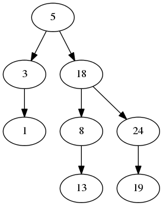

public class VisualBST
extends java.lang.Object
VisualBST constructs a Binary Search Tree while displaying the tree (graphically with Graphviz ) as you create it. It saves the graph as a .png. Here is an example:
| Constructor and Description |
|---|
VisualBST()
Constructs the empty VisualBST.
|
public void add(int x)
public void print()
public static void main(java.lang.String[] args)